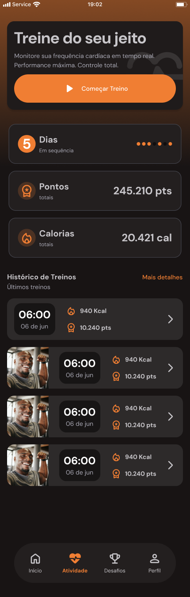
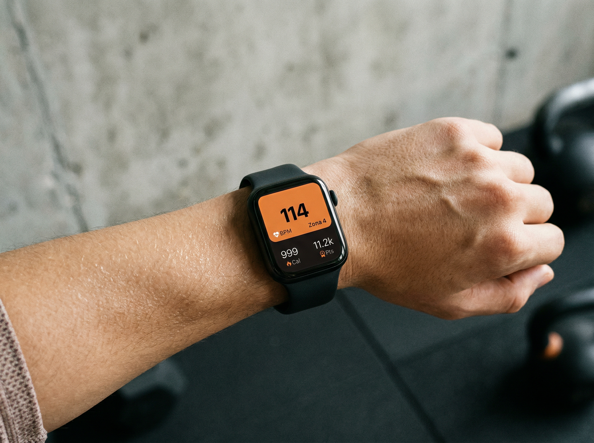
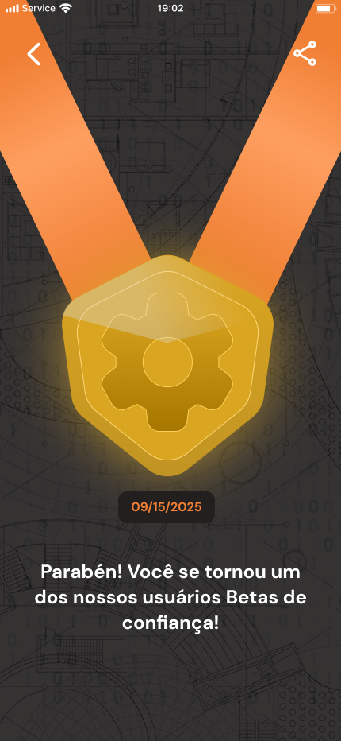

Your workout, your wearable
After structuring the B2B side of Moovz, the next step was ambitious: bring that entire experience directly to the end user's smartphone. And connect it with the wearable they already use every day.
In a team of three — me as designer and Scrum Master, plus two devs — the challenge was to design and deliver a new flow that read heart rate in real time and turned it into points within the gamification system Moovz already had.
The real problem: you need to buy yet another device
Today, to use Moovz's heart rate system, the user needs a specific heart rate monitor. This creates an entry barrier that goes against everything the product should be.
And the most frustrating part is that it's not a hard technical problem to solve. It's a product decision — and it was excluding a huge base of users who already have a smartwatch on their wrist.
This pattern exists across the entire fitness tech market. OrangeTheory requires the proprietary OTbeat for the Splat Points system. MyZone only works with the MZ belt. Even Apple Fitness+ excludes everyone without an Apple Watch. These are products that ask users to invest in hardware before knowing if the product is worth it.
Strava took the opposite path — connects with virtually any available GPS and wearable device — and that was decisive in becoming the world's largest social fitness platform with over 100 million users. Protocol openness isn't a technical detail. It's a growth strategy.
The guiding question
Why should the user buy new hardware if they already have a smartwatch on their wrist? Removing this barrier isn't just a technical decision — it's a business decision about who you want to grow with.
Closed Hardware
OrangeTheory, MyZone, Apple Fitness+ — proprietary devices required. High entry barrier, limited addressable market.
Open Hardware
Strava, Moovz B2C — any BLE-compatible wearable. No barrier, maximum reach, growth-first approach.
"Why should the user buy new hardware if they already have a smartwatch on their wrist?"
The question that guided every technical and product decision
BLE with Heart Rate GATT profile
The connectivity strategy was designed to cover the widest possible number of devices without creating manufacturer-specific integrations — which would be unfeasible in a three-person team.
Bluetooth Low Energy (BLE) with the Heart Rate GATT profile (standardized by the Bluetooth SIG) is natively supported by the vast majority of modern wearables: Apple Watch, Samsung Galaxy Watch, Polar, Wahoo, Garmin (BLE models), Xiaomi Mi Band, Fitbit, and virtually any contemporary chest strap. One protocol, massive coverage.
For users without any wearable, the app maintains all functionality — points are calculated by other parameters like task difficulty and duration. No second-class experience.
- BLE + Heart Rate GATT — Universal standard protocol. No per-manufacturer SDK. One integration covers dozens of brands.
- No-Wearable Fallback — For users without a wearable, the app maintains full workout functionality. Points are calculated from task difficulty, duration and exercises completed — no second-class experience.

Wearable Pairing
The Bluetooth connection flow — device search, discovered devices list, and connection confirmation. Clarity and simplicity are critical here.
Points that reflect biometric effort
With heart rate available in real time, the scoring system gained a new dimension. Biometric effort became part of the calculation.
The system uses the 5 Heart Rate Zones based on the Karvonen Method — each zone represents a different intensity level. Training in higher zones for longer generates more points. This creates a direct incentive to push harder during class, without needing any verbal instruction.
It's the same principle behind OrangeTheory's Splat Points — one of the most cited factors by users as the reason to come back. The difference is that on Moovz, it works with the wearable the user already has.
From a gamification standpoint, this mechanism activates two Octalysis Framework drivers simultaneously: Development & Accomplishment (seeing points grow in real time) and Reward Unpredictability (never knowing exactly how many points you'll end up with based on the day's effort).
The visibility of points growing during peak effort also applies Kahneman's Peak-End Rule: the hardest moment of class coincides with maximum point accumulation, creating a positive memory associated with peak performance.
Octalysis Framework — Yu-kai Chou
This mechanism simultaneously activates two of the eight core drives: Development & Accomplishment (seeing points grow in real time) and Reward Unpredictability (never knowing exactly how many points you'll earn based on the day's effort). The Peak-End Rule (Kahneman) amplifies the effect: the moment of greatest effort coincides with maximum point accumulation, creating a positive memory associated with peak performance.

Real-Time Workout
The main screen during class: heart rate highlighted, current training zone with corresponding color, points accumulating in real time, and the current exercise.

Post-Workout Summary
Total time, points earned, predominant heart rate zone, and comparison with previous workouts. The post-workout moment is when user satisfaction peaks — it needs to celebrate effort with clarity.
"The wearable the user already owns is the most powerful growth lever a fitness product can have."
Hardware accessibility as growth strategy
The Beta Tester medal
To launch the wearable integration feature, we designed an engagement strategy that used Moovz's own achievement system as the channel.
Users invited to test the new feature would receive an exclusive Beta Tester medal — added to the achievement system with special rarity and a permanent damage multiplier as reward. After the beta period, this medal would no longer be available to anyone.
The logic is direct: Scarcity & Exclusivity (Cialdini, Influence) — a badge available only to those who participated in the beta during a specific period becomes a status symbol within the community. It's the same mechanism behind Discord's "Early Supporter" badge or subscription products' "Founder" seal.
Additionally, entering the beta with a special achievement already in their profile creates what Nunes & Dreze called the Endowed Progress Effect in 2006: starting with some progress already guaranteed increases the likelihood of continued engagement to complete the rest.
In practice, the strategy also served as a qualified feedback collection channel. Beta testers motivated by an exclusive reward tend to report problems more carefully and use the product more frequently — generating much richer data than any generic form ever would.
- Scarcity & Exclusivity (Cialdini) — A medal available only to beta participants in a specific period can never be obtained again. This transforms a digital badge into a status symbol — exactly like Discord's "Early Supporter" badge or subscription products' "Founder" crown.
- Endowed Progress Effect (Nunes & Dreze, 2006) — By entering the beta with a special achievement already in their profile, users start with a sense of advancement — increasing the likelihood of continued engagement to complete the remaining achievements.

Beta Tester Achievement
The exclusive medal with special rarity indication and the message that it won't be available after the beta period. Scarcity needs to be visible in the interface.
See it all in motion
Product Walkthrough
The complete Moovz B2C experience — from wearable pairing to real-time workout tracking and post-session summary.
Scrum Master in a three-person team
In a small team, Scrum Master isn't a ceremony facilitator. It's the person who ensures three people are always aligned on the same priority, that technical blockers surface early before becoming delays, and that delivery rhythm is sustainable.
The main process decision was adopting one-week sprints with quick reviews. This allowed validating BLE integration with different devices incrementally — finding incompatibilities week by week instead of discovering everything at the end.
Hardware accessibility is a business decision disguised as a technical one
This project reinforced that hardware accessibility is a business decision disguised as a technical one. Requiring a specific device doesn't just create an entry barrier — it creates a trust barrier. The user needs to invest money before knowing if the product is worth it.
Removing that barrier was the highest strategic impact decision of the project. It wasn't the most technically complex — it was the one that required the most careful product reading.
"Removing the hardware barrier was the highest strategic impact decision. Not the most complex — but the one requiring the most careful product reading."
The reality of product decisions